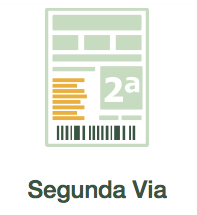
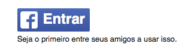
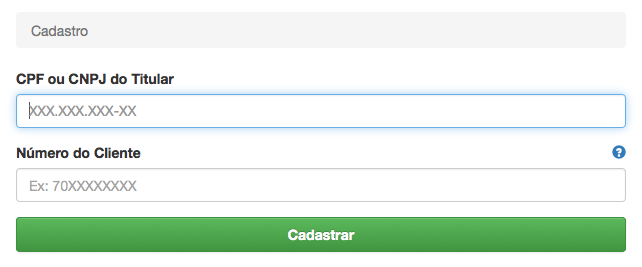
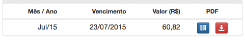

Passo a passo para retirar a segunda via da CEMIG.
Passo 1
Acesse a página de Autoatendimento da CEMIG.
Passo 2
Clique no ícone ou link "Segunda Via".

Passo 3
Clique no botão "Entrar" do Facebook.
Será necessário dar autorização ao aplicativo.

Passo 4
Caso seja o primeiro acesso, uma tela de cadastro aparecerá.
Nela será necessário digitar o CPF do titular da conta de energia e o número do cliente, o qual consta numa conta de luz antiga qualquer.

Passo 5 - Final
Uma tela com as faturas pendentes do seu imóvel será apresentada.
Basta então clicar no botão vermelho da linha correspondente à fatura desejada para baixar o PDF da segunda via.
